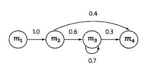
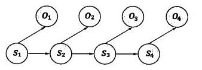

隐含马尔可夫模型
语言和通信之间存在天然的联系。两个人对话的时候说话的一方就相当于是信息源，而声带、空气等就相当于是传输的通道，听的一方相当于信息的接收方。
那么现在要做的就是根据接收端的观测信号 $o_1,o_2,o_3,…$ 推测信号源发送的信息$s_1,s_2,s_3,…$。其实这就需要从所有的源信息中找到最可能产生出观测信号的哪一个信息即
$P(o_1,o_2,o_3,…|s_1,s_2,s_3,…)$需达到最大值。根据贝叶斯公式，上述公式可转换为
$$
\frac {P(o_1,o_2,o_3,…|s_1,s_2,s_3,…) \cdot P(s_1,s_2,s_3,…)}{P(o_1,o_2,o_3,…)}
$$
这个公式看似复杂，但是一旦信息形成，其实$P(o_1,o_2,o_3,…)$是固定的。因此上述公式可简化为
$$
P(o_1,o_2,o_3,…|s_1,s_2,s_3,…) \cdot P(s_1,s_2,s_3,…)
$$
接下来就是介绍隐含马尔可夫模型。在这之前先介绍马尔科夫链。随着概率论从对随机变量的研究发展到对随机过程的研究，这其中的研究方法变得复杂了许多。什么是随机过程，即任意一时刻t，对应的状态$s_t$都是随机的，且st的取值可能与周围其他的状态相关。这样问题就变得十分复杂。为了简化问题，马尔可夫提出了一种假设，即随机过程中各个状态$s_t$的概率分布，只与他的前一个状态$s_{t-1}$有关即$P(s_t|s_1,s_2,s_3,…s_{t-1})=P(s_t|s_{t-1})$。这个假设就被称为马尔可夫假设，符合这个假设的随机过程则被成为马尔可夫链或马尔可夫过程。下图描述的为一个马尔可夫链

四个圈表示四个状态，每条边表示一个转换过程，边上的权值代表转换概率。例如，$P(s_{t+1}=m_3|s_t=m_2)=0.6$
隐含马尔可夫模型是马尔可夫模型的一个扩展，任一时刻的状态$s_t$都是不可见的。但是每个时态的隐含马尔可夫模型会输出一个符号$o_t$。$o_t$仅和$s_t$相关

基于马尔可夫假设以及独立输出假设某个特定状态序列$s_1,s_2,s_3,…$产生$o_1,o_2,o_3,…)$的概率为
$$
P(s_1,s_2,s_3,…,o_1,o_2,o_3,…)=\prod_tP(s_t|s_{t-1}) \cdot P(o_t|s_t)
$$
其实，将
$$
P(o_1,o_2,o_3,…|s_1,s_2,s_3,…)=\prod_tP(o_t|s_t)
$$
$$
P(s_1,s_1,s_2,s_3,…) = \prod_tP(s_t|s_{t-1})
$$
代入
$$
P(o_1,o_2,o_3,…|s_1,s_2,s_3,…) \cdot P(s_1,s_2,s_3,…)
$$
得到的正是上述公式。
那么给定足够量的观测数据，如何估计隐含马尔可夫模型的参数。
如果有足够多的人工标记，知道经过$s_t$的次数，以及每次经过这个状态分别输出的$o_t$是什么。那么就可以通过如下公式进行计算。
$$
P(o_t|s_t)\approx\frac{C(o_t,s_t)}{C(s_t)}
$$
其中$C(o_t,s_t)$为状态$s_t$转换为$o_t$的次数。$C(s_t)$为状态$s_t$的出现次数。这种方法是有监督的训练方法，但是这种方法需要大量的人工标记，这在实际情况中比较难实现。因此，需要一种方法仅仅通过观测到的$o_1,o_2,o_3,…$就能推算出$P(s_t|s_{t-1})$和$P(o_t|s_t)$的方法，这种就是无监督的训练方法，其中最主要使用的是鲍姆-韦尔奇算法。
两个不同的隐含马尔可夫模型可以产生同样的输出信号，因此仅仅观察输出信号，会有多个模型满足条件，这时需要找到一个模型是最有可能产生输出的，寻找最有可能产生指定输出的模型。一开始设定一个初始模型，然后不断迭代，直到模型的质量没有明显提高为止。这样一个过程是期望值的最大化（Expectation-Maximization）也就是EM过程。EM过程能保证找到一个局部最优点但是一般不能找到全局的最优点。因此这种方法会比有监督的训练方法得到的结果更差。
本文参考吴军先生的《数学之美》